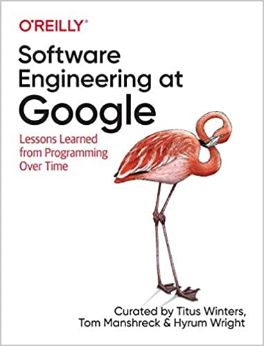

Software Engineering at Google
Wednesday March 31, 2021
I read this over half a year with a book club of colleagues at work, one chapter per week, which is part of why I have such a lot of notes below. Interesting stuff! Even when it isn't perfectly applicable to my own work, it's neat to peek a little bit inside the giant company.

- What is Software Engineering?
- How to Work Well on Teams
- Knowledge Sharing
- Engineering for Equity
- How to Lead a Team
- Leading at Scale
- Measuring Engineering Productivity
- Style Guides and Rules
- Code Review
- Documentation
- Testing Overview
- Unit Testing
- Test Doubles
- Larger Testing
- Deprecation
- Version Control and Branch Management
- Code Search
- Build Systems and Build Philosophy
- Critique: Google's Code Review Tool
- Static Analysis
- Dependency Management
- Large-Scale Changes
- Continuous Integration
- Continuous Delivery
- Compute as a Service
Chapter 1: What is Software Engineering?
"It's programming if 'clever' is a compliment, but it's software engineering if 'clever' is an accusation." (page 10)
A colleague notes: "I don’t even think clever in programming should be a compliment most times. Elegance deserves a compliment, though."
"... the goal is consensus, not unanimity." (page 18)
I haven't thought about it much before, but if consensus isn't unanimity, it's hard to define.
"Efficiency gains from keeping engineers happy, focused, and engaged can easily dominate other factors, simply because focus and productivity are so variable, and a 10-to-20% difference is easy to imagine." (pages 18-19)
"We often say, "Google is a data-driven culture." In fact, that's a simplification: even when there isn't data, there might still be evidence, precedent, and argument." (page 19)
Also, page 24 adds "assumption."
Discussion of whether to use an existing thing, fork it to modify it, or build your own, on page 22...
Chapter 2: How to Work Well on Teams
This chapter is largely a short version of Debugging Teams by the same author, which is very welcome.
"Many humans have the instinct to find and worship idols." (page 28)
"The Genius Myth is the tendency that we as humans need to ascribe the success of a team to a single person/leader." (page 28)
"The vast majority of the work at Google (and at most companies!) doesn't require genius-level intellect, but 100% of the work requires a minimal level of social skills." (page 29)
"Hopefully most engineers recognize that it is better to be one part of a successful project than the critical part of a failed project." (page 31)
"We think the middle ground [between individual offices and open floor plans] is really the best solution. Group teams of four to eight people together in small rooms (or large offices) to make it easy (and non-embarrassing) for spontaneous conversation to happen." (page 33)
This is similar to advice in Peopleware.
"If less-knowledgeable [or, really, any] people on your team feel that there's a barrier to asking you a question, it's a problem: finding the right balance is an art." (page 33)
Chapter 3: Knowledge Sharing
The problem of "all-or-nothing expertise" (page 44)
"Tribal and written knowledge complement each other." (page 46)
They reference The five keys to a successful Google team , which are:
- Psychological safety: Can we take risks on this team without feeling insecure or embarrassed?
- Dependability: Can we count on each other to do high quality work on time?
- Structure & clarity: Are goals, roles, and execution plans on our team clear?
- Meaning of work: Are we working on something that is personally important for each of us?
- Impact of work: Do we fundamentally believe that the work we’re doing matters?
"... Moma, Google's intranet search engine." (page 51)
"YAQS ("Yet Another Question System") is a Google-internal version of a Stack Overflow-like website" (page 52)
a Google-internal version of a Stack Overflow-like website
g3doc is pretty neat. Described more in: The Knowledge: Towards a Culture of Engineering Documentation
https://codelabs.developers.google.com/
This stuff on readability is interesting, since the Google meaning of readability is not the same as the usual meaning of readability. It helps me better understand such Jeff Dean facts as:
- "Jeff Dean once bit a spider, the spider got super powers and C++ readability."
- "Jeff Dean has punch card readability."
- "Jeff Dean has binary readability."
- "Jeff Dean acquired Sawzall readability after writing 58 lines of Sawzall code. As part of his readability review, he pointed out a flaw in the style guide which was promptly corrected by the reviewer."
- "Jeff got Java readability with only 8 lines of code."
- "Jeff Dean has Perl Readability. (TRUE)"
Engelbart's Bootstrapping Organizations Into the 21st Century is largely about knowledge sharing.
Chapter 4: Engineering for Equity
In discussing "technology to scan, capture, and identify people walking down the street" (page 73) it kind of highlights how fraught discussions of ethics are: Is the problem "racial variance in facial recognition" or is the problem doing facial recognition at all?
"Google now offers statistical training within the context of AI to help ensure that datasets are not intrinsically biased." (page 74)
I asked for more info: https://twitter.com/planarrowspace/status/1317130678643941379
"Ratings, although an important way to measure performance during a specific period, are not predictive of future performance and should not be used to gauge readiness for a future role or qualify an internal candidate for a different team." (page 77)
Chapter 5: How to Lead a Team
"A Manager is a leader of people, whereas a Tech Lead leads technology efforts." (page 81)
Both of these (and the Tech Lead Manager, when one person does both roles) seem to be tied to a team (in contrast to "matrix" style).
"Most TLs are also individual contributors, which often forces them to choose between doing something quickly themselves or delegating it to a team member to do (sometimes) more slowly." (page 82)
Google Takeout is a public-facing tool (also?) now. (page 83)
"Before the computing age, "management" and "labor" might have taken on almost antagonistic roles, with the manager wielding all of the power and labor requiring collective action to achieve its own ends. But that isn't how modern software companies work." (page 86)
This seems... incomplete.
"Traditional managers worry about how to get things done, whereas great managers worry about what things get done (and trust their team to figure out how to do it)." (page 87)
"If your employees are so uninterested in their job that they actually need traditional-manager babysitting to be convinced to work, that is your real problem."
"[with low performers] It almost always requires temporary micromanagement, ..." (page 90)
On page 95, the emphasis on asking questions (rather than giving direct advice, etc.) is a good reminder.
Chapter 6: Leading at Scale
- Always Be Deciding
- Identify blinders
- Identify trade-offs
- Decide
- Always Be Leaving
- Build a "self-driving" team
- Always Be Scaling
- Important versus urgent
- Learn to drop balls
- Protecting your energy
"... if you agree that your mission is to build a self-driving organization, the main mechanism of teaching is through delegation." (page 113)
"You give them an assignment, let them fail, and then try again and again." (page 113)
"One technique for fighting the feeling that you don't know what you're doing is to simply pretend that some expert out there knows exactly what to do, and that they're simply on vacation and you're temporarily subbing in for them. It's a great way to remove the personal stakes and give yourself permission to fail and learn." (page 116)
"... over time, as you grow older, your overall stamina builds up. Early in your career, working eight hours a day in an office can feel like a shock; you come home tired and dazed. But just like training for a marathon, your brain and body build up larger reserves of stamina over time." (page 120)
"Your brain operates in natural 90-minute cycles." (page 121)
They reference BRAC (Basic Rest-Activity Cycle)... I'm not sure how much formal research evidence there really is, but I'm still down with taking breaks every once in a while.
Chapter 7: Measuring Engineering Productivity
The "Triage: Is It Even Worth Measuring?" section starting page 125 reminds me of Cassie Kozyrkov's "decision science" stuff, focusing on statistics for decision-making.
On page 127 they imagine "there's a major funding deadline approaching" which makes me wonder what this means inside Google. How is funding determined?
On page 129 they start talking about Goals/Signals/Metrics (GSM). They identify QUANTS categories (Quality of the code, Attention from engineers, Intellectual complexity, Tempo and velocity, Satisfaction). It seems like this is related to the HEART framework (Happiness, Engagement, Adoption, Retention, Task success) which also uses GSM.
Page 129 also references Dijkstra's On the cruelty of really teaching computing science in a footnote.
"Although academic literature has proposed many proxies for code quality, none of them have truly captured it. For readability, we had a decision of either using a poor proxy and possibly making a decision based on it, or simply acknowledging that this is a point that cannot currently be measured. Ultimately, we decided not to capture this as a quantitative measure, though we did ask engineers to self-rate their code quality." (page 133)
"It has routinely been our experience at Google that when the quantitative and qualitative metrics disagree, it was because the quantitative metrics were not capturing the expected result." (page 133)
"There is a temptation to use such metrics to evaluate individual engineers, or perhaps even to identify high and low performers. Doing so would be counterproductive, though. If productivity metrics are used for performance reviews, engineers will be quick to game the metrics, and they will no longer be useful for measuring and improving productivity across the organization. The only way to make these measurements work is to let go of the idea of measuring individuals and embrace measuring the aggregate effect." (page 134)
"Qualitative metrics should also align with the quantitative metrics; if they do not, it is likely the quantitative metrics that are incorrect." (page 138)
Chapter 8: Style Guides and Rules
"... our C++ rules disallow use of exceptions, a language feature widely used outside of Google code." (page 142)
"SREs, library engineers, and code janitors" (page 147)
I didn't know Google used the term "code janitor"... I found at least one ref that also uses "janitors."
Page 149 mentions Starlark, which I don't think I'd heard of before.
"We place higher value on simplified, straightforward code that is easier to understand and maintain." (page 150)
"... multiple inheritance, something explicitly forbidden for all other C++ code." (page 151)
I used to like the NumPy comment guidelines, but these days I prefer the Google ones mentioned on page 152.
I hadn't realized that Google had their own Python autoformatter, as mentioned on page 161. Seems like yapf is very similar to black.
Chapter 9: Code Review
“At Google, reviewers may even directly share suggested edits with an author within the code review tool itself.” (page 503)
GitLab does this, but only for single-line changes, as far as I know...
“After you check that piece of code into the codebase, it is no longer yours in any case.” (page 507)
“Probably the most important practice to keep the code review process nimble is to keep changes small.” (page 509)
“A change description should indicate its type of change on the first line, as a summary. The first line is prime real estate and is used to provide summaries within the code review tool itself, to act as the subject line in any associated emails, and to become the visible line Google engineers see in a history summary within Code Search (see Chapter 17), so that first line is important.” (page 512)
"Keep Reviewers to a Minimum" (page 514)
Chapter 10: Documentation
“At Google, our most successful efforts have been when documentation is treated like code and incorporated into the traditional engineering workflow, making it easier for engineers to write and maintain simple documents.” (page 530)
“When we deprecated GooWiki, we found that around 90% of the documents had no views or updates in the previous few months.” (page 593)
And they focus a lot on staleness etc. being connected to ownership.
“...one thing we’ve found is that it helps to keep your documents short.” (page 548)
“Most teams at Google require an approved design document before starting work on any major project. A software engineer typically writes the proposed design document using a specific design doc template approved by the team. Such documents are designed to be collaborative, so they are often shared in Google Docs, which has good collaboration tools. Some teams require such design documents to be discussed and debated at specific team meetings, where the finer points of the design can be discussed or critiqued by experts. In some respects, these design discussions act as a form of code review before any code is written.” (page 560)
“If comments are the unit tests of documentation, conceptual documents are the integration tests.” (page 568)
“At Google, we often attach “freshness dates” to documentation. Such documents note the last time a document was reviewed, and metadata in the documentation set will send email reminders when the document hasn’t been touched in, for example, three months. Such freshness dates, as shown in the following example—and tracking your documents as bugs—can help make a documentation set easier to maintain over time, which is the main concern for a document” (page 585)
“If you can’t explain it and can’t define it, you probably haven’t designed it well enough.” (page 187)
Chapter 11: Testing Overview
“The more and faster you want to change your systems, the more you need a fast way to test them. The act of writing tests also improves the design of your systems.” (page 594)
- write tests
- run tests
- react when tests fail
Benefits:
- less debugging
- increased confidence in changes
- improved documentation
- simpler reviews
- thoughtful design
- fast, high-quality releases
“We have come to the conclusion that there are two distinct dimensions for every test case: size and scope. Size refers to the resources that are required to run a test case: things like memory, processes, and time. Scope refers to the specific code paths we are verifying.”
“in brief, small tests run in a single process, medium tests run on a single machine, and large tests run wherever they want”
The Google Testing Blog includes their "testing on the toilet" one-pagers.
“Code coverage can provide some insight into untested code, but it is not a substitute for thinking critically about how well your system is tested.”
- Orientation classes
- Test certified
- Testing on the toilet
pH: Project Health
Chapter 12: Unit Testing
“Because they make up such a big part of engineers’ lives, Google puts a lot of focus on test maintainability. Maintainable tests are ones that “just work”: after writing them, engineers don’t need to think about them again until they fail, and those failures indicate real bugs with clear causes. The bulk of this chapter focuses on exploring the idea of maintainability and techniques for achieving it.”
“a brittle test is one that fails in the face of an unrelated change to production code that does not introduce any real bugs”
"Strive for Unchanging Tests"
"Test via Public APIs"
"Test State, Not Interactions"
That is, test the result, not how it's achieved.
"Make Your Tests Complete and Concise"
"given, when, then" or "arrange, act, assert"
"Don't Put Logic in Tests"
“The lesson is clear: in test code, stick to straight-line code over clever logic, and consider tolerating some duplication when it makes the test more descriptive and meaningful.”
DAMP (Descriptive and Meaningful Phrases) rather than pure DRY (Don't Repeat Yourself)
“test infrastructure must always have its own tests.”
Chapter 13: Test Doubles
The tl;dr on page 280 is a pretty good summary:
- A real implementation should be preferred over a test double.
- A fake is often the ideal solution if a real implementation can't be used in a test.
- Overuse of stubbing leads to tests that are unclear and brittle.
- Interaction testing should be avoided when possible: it leads to tests that are brittle because it exposes implementation details of the system under test.
"[Tests using mocking frameworks] required constant effort to maintain while rarely finding bugs." (page 259)
They talk about dependency injection, which I think is generally a good idea, especially if you can separate in the style of "functional shell, imperative core" so that you're testing mostly pure functions.
I hadn't known about "automated dependency injection frameworks" - maybe they're neat?
- https://github.com/google/guice
- https://github.com/google/dagger
Are there any for Python? At least one:
- https://python-dependency-injector.ets-labs.org/
I'm not sure I want to use it... It seems mostly for very object-oriented designs, though I could be wrong.
The book also says:
"With dynamically typed languages such as Python or JavaScript, it is possible to dynamically replace individual functions or object methods. Dependency injection is less important in these languages because this capability makes it possible to use real implementations of dependencies in tests while only overriding functions or methods of the dependency that are unsuitable for tests." (page 261)
I mean, I guess so, but I don't love that style either.
I agree more with this:
"Code written without testing in mind typically needs to be refactored or rewritten before you can add appropriate tests." (page 261)
Techniques for using test doubles:
- Faking: A parallel implementation stands in
- Stubbing: Force something to return a specific value
- Interaction testing: Check that something was called (don't actually call it)
But: Prefer real implementations ("classical testing")
"Stubbing leaks implementation details of your code into your test." (page 273)
"Another downside of interaction testing is that it utilizes implementation details of the system under test" (page 276)
aka "change-detector tests"
Chapter 14: Larger Testing
"At Google, configuration changes are the number one reason for our major outages." (page 284)
"Without clear ownership, a test rots." (page 285)
On page 286 they mention "C/J Build" as Google's "first continuous build framework" and TAP as its replacement. Mike Bland has an interesting history of the "Chris/Jay continuous build" and the "Test Automation Platform."
On page 289, I think they may have their math wrong. They say two 10% inaccurate things have a combined likelihood of a bug of 99% (1 - (0.1 * 0.1)). I think they're trying to do one minus the probability of no bugs, which should be (1 - (0.9 * 0.9)), or 19%. That's higher than 10%, but it isn't as bad as 99%. I'm not sure what they intended here.
They advocate "record/replay proxies" as a testing technique, rather
than faking things out more completely, in contrast with
consumer-driven contracts. They point to some Go source (with
comments) for rpcreplay.
"At Google, we have a specialized engineering role of "Test Engineer," and one of the things we look for in a good test engineer is the ability to outline a test strategy for our products." (page 296)
They refer on page 299 to bug bashes.
Google has Catzilla, which is analogous to Chaos Monkey.
"Rater evaluation is critical for nondeterministic systems like machine learning systems for which there is no clear correct answer, only a notion of better or worse." (page 304)
Google has published about Dapper, which I think is a fancy system for getting and tracking unique IDs through request chains, to help with debugging etc.
This chapter had the most glitches (typos, a paragraph that appeared twice, etc.) of any in the book so far, I think.
Chapter 15: Deprecation
"code is a liability, not an asset" (page 312)
"In health care, this phenomenon is known as "alert fatigue.""
"These sorts of important-not-urgent cleanup tasks are a great use of 20% time and provide engineers exposure to other parts of the codebase." (page 320)
I thought 20% time was supposed to be more fun than that.
There isn't an obvious deprecation system in Python, as far as I know.
There is a built-in DeprecationWarning. There is a package but
you have to install it. If you already have TensorFlow installed, you
can use tensorflow.contrib.framework.deprecated from it (in TF
1.14.0).
Chapter 16: Version Control and Branch Management
The chapter is by Titus Winters, and he refers to what Google does as "trunk-based development." I think he also likes to say "live at head" to mean largely the same thing. He references DORA, who agrees, and was aquired by Google.
I was reminded of the bad old days at a previous employer, where for some code we couldn't version control we would pass around a big green translucent serving platter to represent "having a lock" on the code.
A commit is like an instantaneous lock/edit/unlock.
"... considering common usage, both the centralized and DVCS [Distributed Version Control System] models are largely interchangeable:" (page 333)
Hard to not want to nit-pick the focus on time (cf. Time, Clocks, and the Ordering of Events in a Distributed System) and think of Git's time-free approach. Apparently Google's versions are incrementing integers?
"Monotonically increasing version numbers, rather than commit hashes, are particularly troublesome. Many systems and scripts have grown up in the Google developer ecosystem that assume that the numeric ordering of commits is the same as the temporal order–undoing those hidden dependencies is difficult." (page 333)
Google's main version control system, for the giant monorepo, is called Piper. I think I saw somewhere that it used to be Perforce?
Abseil : C++ :: Guava : JavaSeems like Java "shading" is (a little bit) like Python's dunderscore mangling, but specifically for dependencies. Google hates dependency conflicts.
On page 343 they reference The Phoenix Project: A Novel About IT, DevOps, and Helping Your Business Win. Apparently it advocates "reducing work-in-progress" among other things.
"Our various teams have all sorts of policies about release branches given that relatively few teams have arrived at the sort of rapid release cadence promised by CD [Continuous Delivery] that obviates the need or desire for a release branch." (page 344)
"diamond dependencies" (page 345)
"We expect a shift in VCS technology that assumes constant network availability, focusing more on storage and build in the cloud to avoid transmitting unnecessary files and artifacts." (page 348)
I like not having to be connected all the time.
"Long-lived dev branches are not a good default plan." (page 349)
Agree.
They really advocate "for interrepository dependencies to be unpinned/"at head"/"trunk based."" I think this must make sense when you're running a ton of interdependent things. Most of my work is on quite independent projects, like a statistical analysis that can run with its own universe of dependencies that never need to be aligned with any other repo's dependencies. For my stuff, pinning dependencies pretty aggressively is good for reproducibility.
Chapter 17: Code Search
The old "external Code Search" is described on Wikipedia.
Hmm! There is some public Google code search, not mentioned in the text. It... doesn't seem great? But maybe I don't know what to look for.
Hmm! Google's RE2 regular expression engine is open source and
has a Python wrapper. Looks like the trade-off is speed in
exchange for "various PCRE features (e.g. backreferences, look-around
assertions) are not supported".
Ah! I thought so! Yegge was behind Grok, which became/merged with Kythe, which knows all about programming.
One page 353 they advocate "using named types rather than generic things like strings or integers, because it's then easy to find all usages." Okay.
On page 354 they mention "how to compute a fingerprint for integer values efficiently" and I think that could be referring to getting the hash of something; are they talking about hashing integers? Are these integers so big that they can't just be their own hashes? Or is that cheating?
On page 357 there's a screenshot of a log viewer that seems to be called "Analog" but I think it's different from the web log analyzer of that name...
They have a surprising reference for the "responsive if latencies are below 200 ms" bit on page 359.
The code for the old internal Google code search is up, and also you can read Russ Cox explaining it. Trigrams!
The reference to searching 20GB/s is now searching 1.5TB/s!
Had to go Wayback, but there's also a bunch on substring matching.
Summarizing Google's code search history:
grep- trigram
- suffix array
- token-based sparse n-gram (uses Google's "primary indexing and search stack")
They describe moving the inverted index from memory to flash storage, which I guess probably isn't relevant to the current state.
On page 369 they mention "low recall accuracy" and go on to say that means "nonmatches need to be filtered out of the result set." I think they're using "recall accuracy" to mean "precision"?
Chapter 18: Build Systems and Build Philosophy
Did they seriously just have a whole chapter on build systems and not mention make? They mention "Ant, Maven, Gradle, Grunt, and Rake" (page 376) but can't mention make?
There's some disconnect between their "engineers love the build system" and the footnote that says "83% of Googlers reported being satisfied with the build system" (page 371).
- Google's internal "Blaze" build tool
They point out that the artifact-based input/output structure of Bazel is analogous to functional programming. That's true. In this way, Bazel is similar to lots of DAG-based systems, like Airflow, etc.
They mention C++ can include other files and that this is an issue for knowing what's changed, but I didn't see that they described Bazel having a solution for this...
They mention "the 1:1:1 rule" on page 391 but don't really explain it. Finding an old version of their link:
"The idiom of having one target per directory, representing a single package, is sometimes referred to as the 1:1:1 rule."
So that's 1 directory, 1 target, 1 package.
"Gazelle is a Bazel build file generator for Bazel projects. It natively supports Go and protobuf, and it may be extended to support new languages and custom rule sets."
"Automatically managed dependencies ["*", "+", ">" in version specifications] can be convenient for small projects, but they're usually a recipe for disaster on projects of nontrivial size or that are being worked on by more than one engineer." (page 394)
"... we enforce a strict One-Version Rule for all third-party dependencies in our internal codebase." (page 394)
A thought I had in connection with all this monorepo stuff is: Is this part of the motivation for microservices? A microservice can (in theory?) just expose an API but otherwise have an isolated codebase, OS, etc. It seems like Google jumps through a lot of hoops and introduces a lot of coordination in order to make the monorepo work...
The advice (page 396) to mirror external dependencies so you don't depend on somebody continuing to host them the same way is pretty good advice. (Continues to use Docker Hub base images etc...)
Chapter 19: Critique: Google's Code Review Tool
On page 400 they reference Google's "web-based code editing tool". On page 406 it's "Cider, an online IDE for editing source code stored in the cloud". I don't see much about it online, but there is this fun table showing Google-internal things and how they map to non-Google things.
"In emergency cases, the author can forcefully commit their changes and have it reviewed after commit." (page 402)
Nice to have in a pinch; could allow abuse but still.
They mention on page 403 that their diff does move detection, which many diff tools don't do terribly well... I wonder if theirs is much better.
I saw somebody online who likes Critique and they said https://reviewable.io/ is the closest publicly available tool...
Apparently Critique does screenshot diffs of UIs generated by code, which is neat. (page 404)
"When users drill down to the file level, Critique provides a UI widget with a compact display of the chain of snapshot versions of a file;" (page 404)
This "Zapfhahn" test coverage tool seemed to be mentioned (page 406) only in this book, outside of Google... Similarly for the "GwsQ" for passing code review to someone in a list automatically.
I like this behavior of Critique:
"As mentioned earlier, comments are drafted as-you-go, but then "published" atomically, as shown in Figure 19-7. This allows authors and reviewers to ensure that they are happy with their comments before sending them out." (page 409)
On page 414 they say "each commit is reviewed separately" but I think they must mean each "change set" or branch (in the case of git)...
Chapter 20: Static Analysis
Google's static analysis system: Tricorder
"Static analysis tools at Google must scale to the size of Google's multibillion-line codebase. To do this, analysis tools are shardable and incremental. Instead of analyzing entire large projects, we focus analyses on files affected by a pending code change, and typically show analysis results only for edited files or lines." (page 418)
This is different from most usages of "scaling" that I've seen. "We scale by not trying to scale." I mean, I guess it is a kind of scaling?
Also on page 423, they make it sound like analysis is always single-function (not involving more of the codebase).
"Research about static analysis tools traditionally focused on reducing false negatives; in practice, low false-positive rates are often critical for developers to actually want to use a tool–who wants to wade through hundreds of false reports in search of a few true ones?" (page 419-420)
"An issue is an "effective false positive" if developers did not take some positive action after seeing the issue." (page 420)
On page 421 they mention Refaster, which has been eaten by Error Prone.
"Seven of these [more than 100] analyzers are themselves plug-in systems that have hundreds of additional checks, again contributed from developers across Google." (page 422)
I hadn't thought of this before! How crazy: My plug-in has plug-ins!
"before we established clear feedback channels, many developers would just ignore analysis results they did not understand." (page 423)
"Instead of reenabling customizability, we asked users why they were annoyed and found all kinds of bugs and false positives with the linters. For example, the C++ linter also ran on Objective-C files but produced incorrect, useless results. ... In short, user customization resulted in hidden bugs and suppressing feedback." (page 425)
Some humans do work at Google!
"We have found repeatedly that developers ignore compiler warnings." (page 427)
Chapter 21: Dependency Management
C++ has a one definition rule.
"Within Google, there is a constant stream of guidance directed to our engineers to help them consider this difference between "I got it to work" and "this is working in a supported fashion."" (page 435)
Russ Cox stuff:
- Our Software Dependency Problem
- Semantic Import Versioning
- Not Russ Cox, but this is related to Clojure having the same idea about making major versions separate packages, really.
- Minimal Version Selection
On page 439 they mention Boost as a library with "no compatibility promise" that is "particularly risky"—which makes me wonder whether this is why Google has its own linalg packages, including (at least) gemmlowp.
"SAT" as in "SAT-solver" is an unsatisfying name because it is not an initialism, as far as I can tell.
"Live at Head ... is theoretically sound, but places new and costly burdens on participants in a dependency network." (page 442)
"Prefer languages that have good control over public/private access to APIs of all forms." (page 445)
"there is some loss of fidelity in this compression of software changes into version numbers." (page 448)
"the model of dependency management given infinite resources is effectively that of the Live at Head model." (page 452)
I was interested in the example of open-sourcing gflags, which illustrated some of the costs/risks to a company of open-sourcing a thing.
It does kind of seem like a lot of Google's pain with regard to dependencies is self-inflicted in the sense of existing largely because they insist on the monorepo. I guess that's the trade-off: they like the monorepo so much, they'll fight dependency management fights a lot.
"external users of an API cost a lot more to maintain than internal ones." (page 455)
"When evaluating whether to release something, be aware of the long-term risks: externally shared dependencies are often much more expensive to modify over time." (page 455)
The author advocates for using testing to resolve empirically whether "a new set of versions work together" which could work if you really trust that everything is well tested.
Chapter 22: Large-Scale Changes
"Although funding and staffing a team to run these kinds of migrations can seem like an additional cost, it is actually just internalizing the externalities that an unfunded mandate creates, with the additional benefits of economies of scale." (page 462)
The author's paper: Non-Atomic Refactoring and Software Sustainability
"The SREs who run Google's production services have a mantra: "No Haunted Graveyards." A haunted graveyard in this sense is a system that is so ancient, obtuse, or complex that no one dares enter it. Haunted graveyards are often business-critical systems that are frozen in time because any attempt to change them could cause the system to fail in incomprehensible ways, costing the business real money. They pose a real existential risk and can consume an inordinate amount of resources." (page 464)
"perhaps the most important support for LSCs has been the evolution of cultural norms around large-scale changes and the oversight given to them." (page 468)
- Large-Scale Automated Refactoring Using ClangMR (C++)
- JavacFlume is the same idea but for Java
- Scalable, Example-Based Refactorings with Refaster (also for Java)
"As a rule of thumb, we've long held that if a change requires more than 500 edits, it's usually more efficient for an engineer to learn and execute our change-generation tools rather than manually execute that edit. For experienced "code janitors," that number is often much smaller." (page 470)
Rosie is "An internal tool for doing large scale cleanups and code changes. It splits a large patch into smaller pieces which can be reviewed, tested, and submitted independently."
"languages that tend to be viewed as more focused on developer productivity tend to be more difficult to maintain." (page 471)
Chapter 23: Continuous Integration
TAP (Test Automation Platform) playing a key role again here...
"Relying heavily on feature-flag-guarding is a common paradigm for Continuous Delivery" (page 482)
"By improving test output readability, you automate the understanding of feedback." (page 483)
They reference The Evolution of Automation at Google (oh right! The SRE book is online!)
There's this idea of "green head" as the point just beyond head in the "live at head" sense... Interesting. There isn't just a single head, really? Close to, but not quite? "Green head" is the latest change that's passed tests but not yet committed... Could there be multiple green heads, then, if people are working on different things?
Borg: The Predecessor to Kubernetes
Rapid (the release automation tool) is in the SRE book too.
They mention on page 485 that tests to run can be "selected based on a model that predicts their likelihood of detecting a failure." I wonder what sorts of models they use. (Are they learned?)
On pages 494-495, she mentions a "Build Cop" role as the person who takes responsibility for getting builds green. Interesting.
"Engineers who want to spend less time waiting end up making smaller, targeted changes, which is a win for everyone." (page 496)
Benefits of things being slow.
Chapter 24: Continuous Delivery
"There is a saying among educators that no lesson plan survives its first contact with the student body." (page 505)
This seems to be traceable really to a military quote from von Moltke, usually paraphrased as "No plan survives contact with the enemy."
"One of our codebases, YouTube, is a large, monolithic Python application." (page 507)
"A key to reliable continuous releases is to make sure engineers "flag guard" all changes." (page 508, emphasis in original)
"One issue we noticed when doing deployments to Android was that we could expect a statistically significant change in user metrics simply from pushing an update. This meant that even if we made no changes to our product, pushing an update could affect device and user behavior in ways that were difficult to predict. As a result, although canarying the update to a small percentage of user traffic could give us good information about crashes or stability problems, it told us very little about whether the newer version of our app was in fact better than the older one." (page 512, emphasis in original)
"One release responsibility is to protect the product from the developers." (page 514)
Chapter 25: Compute as a Service
Large-scale cluster management at Google with Borg
On page 519 they mention Prometheus and Grafana somewhat confusingly with Grafana mentioned first, while Prometheus is more of a data source for Grafana, so I think it makes more sense to list Prometheus first... Probably capabilities overlap, I guess.
"Google has chosen, long ago, that the latency degradation due to disk swap is so horrible that an out-of-memory kill and a migration to a different machine is universally preferable—so in Google's case, it's always an out-of-memory kill." (page 521)
On page 522 they mention LMCTFY, which I think I wasn't aware of. An old open source version of Google's containerization, which isn't developed any more as Docker ate the world. Of course there's also Singularity, and I hear people like Firecracker, etc.
"The canonical framework for doing this [distributing work across workers] at Google was MapReduce, later replaced by Flume." (page 526)
Fast key-value stores: An idea whose time has come and gone
"Note that retries need to be implemented correctly—with backoff, graceful degradation and tools to avoid cascading failures like jitter."
"One useful tool to help with idempotency is client-assigned identifiers: if you are creating something (e.g., an order to deliver a pizza to a specific address), the order is assigned some identifier by the client; and if an order with that identifier was already recorded, the server assumes it's a repeated request and reports success (it might also validate that the parameters of the order match)." (page 529)
On page 536 they mention OpenWhisk and Knative. Looks like both help run serverless stuff; Knative is more closely tied to Kubernetes.
"To take one specific instance of that [compromises around system control], the Google Code Jam team (running a programming contest for thousands of participants, with a frontend running on Google AppEngine) had a custom-made script to hit the contest webpage with an artificial traffic spike several minutes before the contest start, in order to warm up enough instances of the app to serve the actual traffic that happened when the contest started. This worked, but it's the sort of hand-tweaking (and also hacking) that one would hope to get away from by choosing a serverless solution." (page 542)
Interesting to see a mention of Zimki, the short-lived PaaS...
Afterward
"The passage of time and the importance of change cannot be ignored." (page 550)